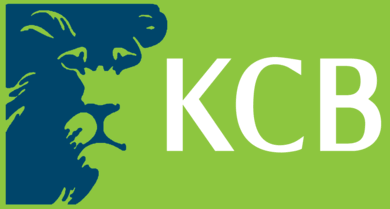
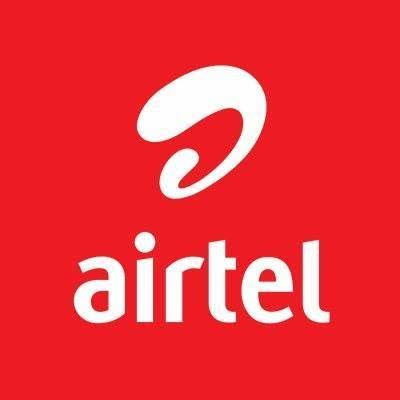
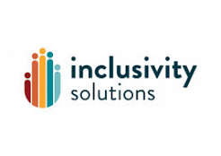
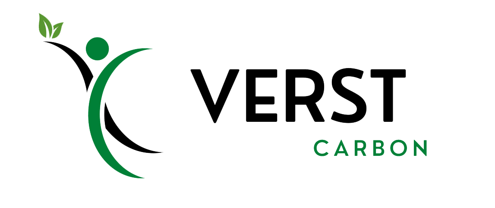
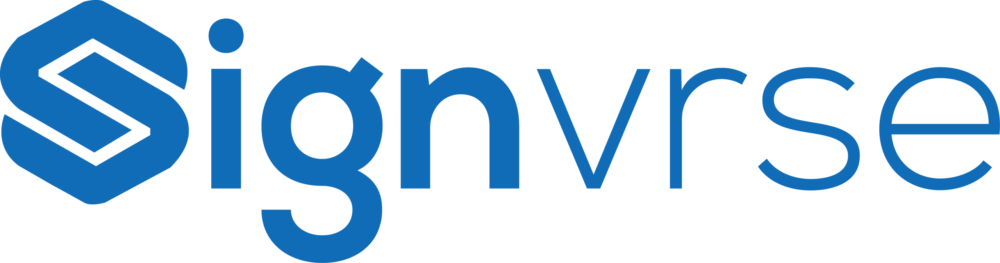
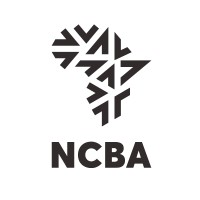
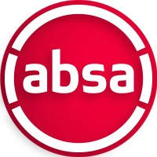

Africa
22 Countries
Our home continent and core focus, from East to West, Southern to North Africa.
The LynchPin Authority
0%
Growth advisory for companies entering or scaling across Africa's fintech · renewable energy · infrastructure sectors.
LynchPin is the connector that helps organisations commercialize, scale, and make money across Africa's nexus.
Led by Hanisa W. Weru, founder of The LynchPin Authority and Techstars-backed neo-bank co-founder.
Hover nodes to view country context. Tap or click a node to focus active markets.
22 Countries
Our home continent and core focus, from East to West, Southern to North Africa.
Dubai · Kuwait · Qatar
Gateway partnerships connecting Gulf capital and enterprise with African markets.
Spain · London · Denmark
Strategic bridges to European development finance, ESG capital, and institutions.
NY · Washington DC · Baltimore · Delaware
Direct advisory engagements with US-based companies on growth strategy.
Hanisa built her career from frontline banking at NCBA into leadership across banking, fintech, sustainability, clean water and sanitation, renewable energy, and insurtech, becoming known for connecting strategy, partnerships, and execution so organizations can commercialize faster, scale across markets, and grow revenue with confidence.
Tap a milestone to read more details right below it.
Hanisa began at Barclays as a Relationship Officer, building the commercial fundamentals: credit analysis, customer acquisition, portfolio discipline, and practical relationship management for retail and SME clients.
At ABSA Bank Kenya, she managed corporate and high-net-worth portfolios, strengthening advisory sales across credit, trade finance, and investment products while deepening compliance-led execution.
At Ezra, she led telecom-fintech partnerships and rollout of airtime credit and micro-lending solutions, aligning product, commercial, and partner teams to scale high-volume digital financial services.
As Partnership Business Leader for East and South Africa, she scaled PAYGO renewable energy distribution through operator and channel partnerships, improving onboarding velocity and portfolio quality.
As Head of Strategic Partnerships, Africa, she managed a $20M+ portfolio, expanded telecom-led models into 13+ markets, and worked with development and institutional partners to drive scalable impact.
At 4Life Solutions, she led commercial growth for SAWA clean water and sanitation solutions, building government and private-sector pipelines and shaping financing structures tied to sustainability outcomes.
At The LynchPin Authority, she now integrates banking, fintech, sustainability, renewable energy, clean water, and insurtech insight to help clients enter markets faster, build strategic partnerships, and convert growth opportunities into measurable commercial performance.









Expertise in National ID programs, MOSIP-based implementations, trust frameworks, and banking/financial inclusion ecosystems across Africa.

Hanisa moderated the panel discussion at the launch of SunKing's new solar inverter business line in Africa.

With the Ministry of Foreign Affairs to pitch the SAWA Can and Bag for clean water access.
From market entry to sustainability strategy and speaking engagements, each service is designed to move from insight to execution.
From sales training to business development execution, including recruitment and commercial team enablement, this pillar covers the core growth functions. Check the plans section for full scope and delivery options.
Strategic support across renewable energy, clean water and sanitation, and carbon markets, with practical roadmaps that move sustainability priorities into executable commercial programs.
Global partnership and advisory support for US-focused growth in New York, California, and Delaware, spanning lead generation, nurture-list development, prospect segmentation, outreach execution, and relationship building.
Executive host and moderator support for roundtables, international conferences, and high-level leadership events, designed to guide meaningful dialogue and elevate strategic outcomes.
Choose the package that matches your growth stage and execution needs. Every paid package includes a customized Playbook, a sales framework tailored to your team, a pipeline management sheet, and documented outputs for continuity.
Discovery and market diagnosis for teams that need direction before heavy execution.
Mid-tier execution advisory for teams that need weekly momentum and pipeline movement.
Deep execution and network handover for organizations requiring end-to-end business development support.
Need a custom top tier (Diamond) or a stand-alone sustainability, grants, or speaking advisory sprint? We also scope bespoke advisory packages.
We work alongside decision-makers who shape markets and scale impact.
Banking · Fintech · Renewable Energy · Water & Sanitation · Sustainability · InsurTech, connected through The LynchPin Authority go-to-market Playbook so clients leave with clear actions, ownership, and revenue outcomes.
Watch short clips from sector events, clean-water advocacy, and banking growth conversations.

A concise discussion on banking strategy, commercialization, and practical growth execution.
Watch on YouTubeLet's build the category together. Reach out for a confidential exploration of how LynchPin can accelerate your Africa strategy.
Book your 30-minute strategy call